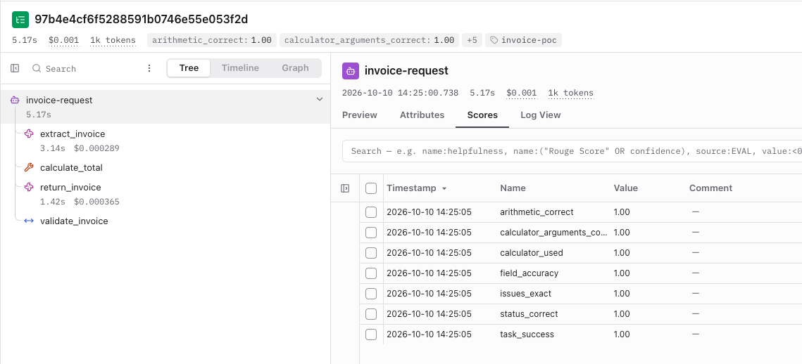

Answers can vary.
One good run is not the whole picture.
Building Evaluation Systems for Production AI Agents
Evals help us check whether AI actually did the job.
25-minute talk + 5-minute Q&A
An answer can sound right and still miss something.
One good run is not the whole picture.
A small omission can change the meaning.
A convincing answer can hide a bad path.
Evals help us check the answer and the work behind it.
The values match.
Two ways to say the same thing.
AI applications need both. Exact checks can be part of an eval too.
Summarize this update for a teammate. Maximum 50 words.
The team moved the product launch from 12 May to 19 May after finding a payment bug. Priya will fix the bug by 18 May. The signup flow is ready. The team will review progress on 17 May. The launch remains dependent on the payment fix being completed.
The launch moved to 19 May because of a payment bug. Priya will fix it by 18 May, and launch depends on that fix being completed.
The new date, reason, owner and dependency are clear.
A good summary keeps the important facts and adds nothing unsupported.
Save these together.
Catches changed facts and missing essentials.
Save the request, the source and what should pass.
Check exact rules.
Word limit · allowed toolsCheck the meaning.
Are key facts kept?Review unclear cases.
Agree on what should pass.Code for exact rules. A judge for meaning. People for unclear cases.
“The product will launch on 12 May. Payment testing is complete, and the team is ready to release.”
18 is within the limit.
A summary can pass the word limit and still be wrong.
Add no unsupported claims.
Uses the old date and claims payment testing is complete.
Give the judge the request, source, answer and a clear rule.
Missing or conflicting information.
Look for mistakes we missed.
Use that decision in future checks.
People set the standard and review cases that need judgment.
Keep agent runs, scores and comparisons together.
Explore Langfuse ↗The tool keeps the records. We decide what a good result means.

Follow the model calls, tool call and validation in one run.
A trace records the steps. Evals check whether those steps and results were right.
Run 1: the summary keeps the launch facts.
The same update can lead to different summaries. Check every run.
One good answer does not tell us how often the agent gets it right.
Save the answers, scores and settings.
Update the instructions, model or search.
Use the same test cases to compare the old and new versions.
Decide which failures block release.
Use feedback. Be ready to pause or go back.
Today’s mistake can become tomorrow’s test.
What would you test
in your own agent?
Start with one failure you want to catch.
Q&A · 5 minutes